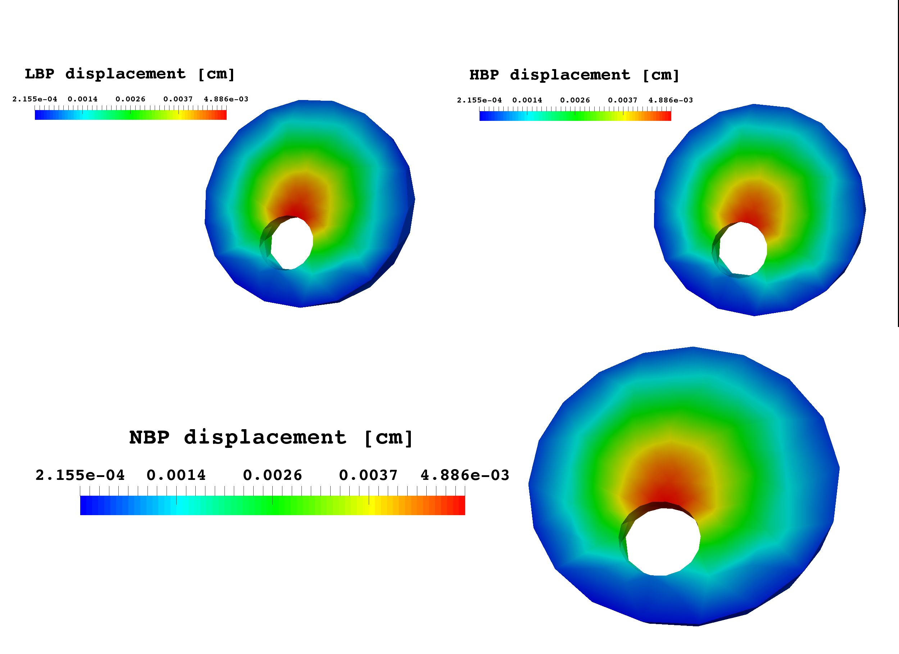

Blood pressure scenario - Level 1 application
This is an example of clinical scenario that involves three patients with different blood pressures. The simulation results have been obtained employing Level 1 of the Ocular Mathematical Virtual Simulator.
Data
The data of the three patients are similar with the exception of the blood pressure, we denote as: - LBP patient, the subject with 100 mmHg and 70 mmHg for the systolic and diastolic pressure, respectively; - NBP patient, the subject with systolic pressure of 120 mmHg and diastolic pressure of 80 mmHg; - HBP patient, the hypertensive virtual subject with 140/90 mmHg for systolic/diastolic blood pressure.
The overall data are resumed in Table 1
Name patient |
SBP |
DBP |
HR |
IOP |
RLTp |
LBP patient |
100 mmHg |
70 mmHg |
60 bpm |
15 mmHg |
7 mmHg |
NBP patient |
120 mmHg |
80 mmHg |
60 bpm |
15 mmHg |
7 mmHg |
HBP patient |
140 mmHg |
90 mmHg |
60 bpm |
15 mmHg |
7 mmHg |
The time simulation interval was 0 - 4 s. Simulation results
The Ocular Mathematical Virtual Simulator was used for this clinical scenario to predict lamina cribrosa displacement (Fig. 1), lamina cribrosa blood pressure distribution (Fig. 2), lamina cribrosa perfusion (Fig. 3) and CRA and CRV blood velocities (Figs. 4 and 5). Screenshots reported in Figs. 1, 2 and 3 correspond to time t=1.01 s (green line in Figs. 4 and 5).
| lamina cribrosa blood pressure at the scleral boundary is not imposed a priori, rather it is computed as a result of the coupling between blood flowing in the 0d circuit and the 3d model for the lamina cribrosa perfusion. |
 |
|
Figure 1: lamina cribrosa displacement at time t=1.01 s. |
|
Figure 2: lamina cribrosa blood pressure distribution at time t=1.01 s. |
Figure 3: lamina cribrosa blood perfusion at time t=1.01 s. |
Figure 4: time evolution of CRA blood velocity profile |
Figure 5: time evolution of CRV blood velocity profile |
Discussion
Simulation results suggest that:
-
lamina cribrosa displacement values (Fig. 1) are comparable to those reported in experimental studies [Yan1994];
-
lamina cribrosa displacement (Fig. 1) is not highly influenced by the presence of the CRA/CRV opening [Sigal2004];
-
lamina cribrosa blood pressure distribution (Fig. 2)attains realistic values [Guidoboni2014], in particular the computed arterial pressure on the lateral boundary;
-
lamina cribrosa blood pressure distribution (Fig. 2) is highly influenced by the values of SBP/DBP imposed at the inlet of the circuit model;
-
lamina cribrosa perfusion increases with SBP/DBP (Fig. 3), particularly near the nasal area;
-
CRA and CRV blood velocities (Figs. 4 and 5, respectively) are comparable to those obtained via direct imaging modalities [Williamson1996].
Bibliography
-
Yan DB, Coloma FM, Metheetrairut A, Trope GE, Heathcote JG, Ethier CR. Deformation of the lamina cribrosa by elevated intraocular pressure. British Journal of Ophthalmology. 1994; 78(8): 643-648;
-
Sigal IA, Flanagan JG, Tertinegg I, Ethier CR. Finite element modeling of optic nerve head biomechanics. Investigative ophthalmology & visual science. 2004; 45(12): 4378-4387.
-
Williamson TH, Harris A. Color Doppler ultrasound imaging of theeye and orbit. Survey of ophthalmology. 1996; 40.4: 255-267.
-
Guidoboni G, Harris A, Cassani S, Arciero J, Siesky BA, Amireskandari A, Tobe L, Egan P, Januleviciene I, Park J. Intraocular pressure, blood pressure, and retinal blood flow autoregulation: a mathematical model to clarify their relationship and clinical relevance. Investigative ophthalmology & visual science. 2014; 55(7), 4105-4118.